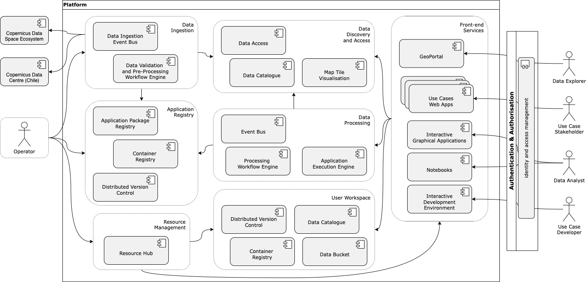
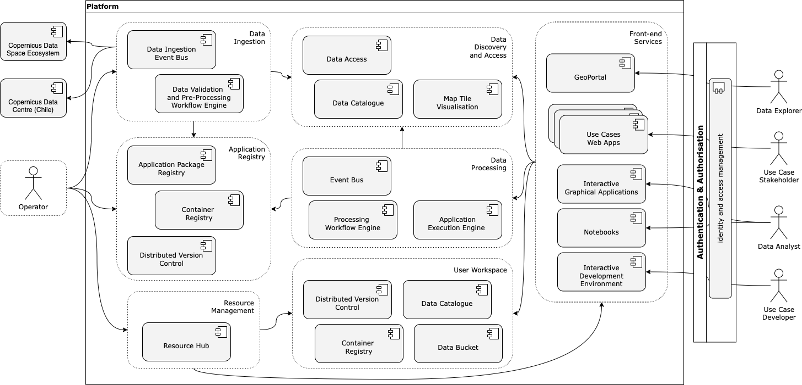

D2 · System Architecture Description · Capítulo 3.6.2
Implementation
Namespace dedicado en Kubernetes gestionado por Crossplane, control de versiones y registro de contenedores propios, clientes CLI, gestión de secretos con ESO y una API REST de workspace.
pp. 31–322 fig.
The implementation of the User Workspace involves several key elements designed to facilitate a user-friendly working environment:
- Personalised Environment: Each user is provided with a personalised workspace where they can manage their data processing tasks, access data, and analyse results.
- Application Management: Users can manage their own application packages, including adding new applications, updating existing ones, and retrieving applications for processing tasks. Each workspace has its own instance of version control (GitLab) and container registry (Harbor).
- Data Access and Management: The workspace provides CLI clients for users to access and manage EO data stored within the platform. This includes tools for data search, retrieval, and processing.
- Processing Job Management: Users can initiate, monitor, and manage their processing jobs directly from the workspace. This includes submitting jobs, tracking progress, and retrieving outputs.
- Infrastructure Management: Each user has a dedicated namespace on the Kubernetes cluster managed by Crossplane, which provisions necessary resources such as S3 buckets and Helm releases.
- Synchronisation: Continuous delivery synchronises the manifests from user repositories with the Kubernetes cluster, ensuring the desired state is consistently applied.
- Secret Management: Sensitive information and secrets are managed using the External Secrets Operator (ESO), ensuring secure storage and retrieval.
- RESTful API: A RESTful workspace API allows for bootstrapping the user environment, managing manifests, and accessing information about provisioned resources.

p. 32